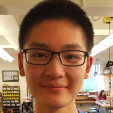

Ben Gerrard
(Technical Leader)
Ben Gerrard is a senior at Natick High School. This season is his fourth year in FTC and fifth year in robotics. His main roles on the team include designing the robot with CAD and managing the build team. Ben enjoys playing video games and tennis. In addition, he likes to build drones and hang out with his friends. He also 3D prints several of our robot's parts on his home 3D printer.
|

Thien Tran
(Administrative Leader)
Thien Tran is a senior at Natick High School. This is his second year in robotics. He enjoys learning about biology, engineering, and mathematics. Thien aspires to study biology in the future. He hopes to major in bioengineering or biomedical sciences. In his free time, Thien plays the piano and plays video games with friends. Lastly, he is the unofficial pun co-leader along with Mich Toryu.
|

Owen Sorber
(Programming & Tactical Leader)
Owen Sorber is a senior at Natick High School in his second year in robotics. Owen is fascinated with computer science and is specifically interested in machine learning and computer vision. He enjoys programming with languages such as Java or Python, building iOS apps with Swift, and developing websites. Outside of robotics, Owen plays the trumpet and the piano and runs for Cross Country and Track.
|

Guangchen Wang
(Programming Leader)
Guangchen Wang is a senior at Natick High School. This is his fourth year in robotics. He is involved in several of our subteams, and works hard to help with building, programming, and some CAD. Guangchen is fascinated by the engineering design process and loves to contribute to every part of it. Outside of robotics, he enjoys reading, playing video games, and designing video games.
|

Bellis Min
(Communications Leader)
Bellis Min is a junior at Natick High School. This is her third year in robotics. She is responsible for organizing our Engineering Notebook to represent our team effectively. During FTC competitions, she loves to talk to other team members from different regions. She has made a lot of friends throughout qualifiers and the state championship. Besides robotics, she also likes to watch Netflix and hang out with her friends.
|

Nick Troccolo
(Tactical Leader)
Nick Troccolo is a senior at Natick High School. This is his second year in robotics. He has been mainly involved in building the robot and assembling main robot lifters. In addition, he is responsible for understanding key information about other teams we will encounter in competitions. Outside of robotics, Nick enjoys running, watching movies, looking at the weather, and working hard.
|